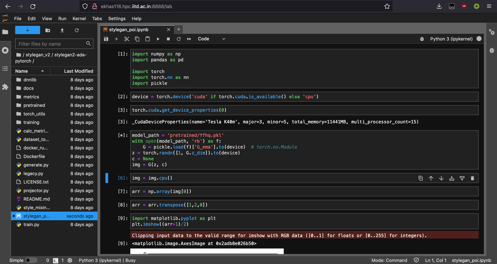
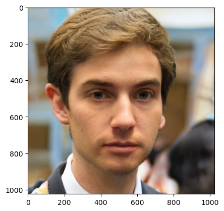

My DL workflow for 2023
Posted on Thu 29 December 2022 in Programming
I've kind of zeroed down on Deep Learning at this point, and putting my money where my mouth is, will be taking both COL772 (Natural Language Processing) and COL775 (Deep Learning) next semester.
Along with Operating Systems, Parallel Programming and Theory of Computation.

Why a workflow?
I'll need to train a lot of models, and while Kaggle and Colab are great at this, 30 hours a week won't cut it. So I'll need to move to using the IITD HPC to train some (most?) of my models.
Most of this article will be very HPC-specific: the libraries, environment and everything else involved in the setup probably (and thankfully) won't need to be replicated anywhere else, but the entire environment is something I'll probably use throughout next semester.
If you're reading this as a HPC getting started guide, this is not it. Ruturaj has published a great guide for that here, and you should check that out as an introduction. This is a tad bit more advanced.
Mission Statement
I need an environment that will let me train the same model on both kaggle and the HPC. Preferably do my initial EDA/debug runs on kaggle and then finetune/do production runs on the HPC.
Let's look at a Pro/Con matrix for both platforms:
| Kaggle | HPC | |
|---|---|---|
| Pro |
|
|
| Con |
|
|
So, if we're shifting to HPC, we need:
- A Live Notebook environment: JupyterLab running on HPC would be great to test/debug stuff: no ML model runs at the first go, and it's foolish to assume that every model we run will just be some python script that we'll need to train. Exploring and interacting with models is part of the job description
- Seamless Kaggle Integration: This is quite important, as we should be directly able to jump from kaggle to HPC if needed, and the way this is finally implemented is via GitHub integration with Kaggle, and Papermill+Git on HPC to run notebooks (some config stuff, such as input/output directories are involved, which I'll get to later)
- A Proper Installable Environment: This was initially set up with Conda, but because conda throws tantrums if the bashrc is not set according to it's tastes, all I used conda for was to setup the initial virtual environment. From there, it's easier to directly activate the virtual environment yourself and use pip.
The Setup Process
This section started out as being very procedural, but I think a good grasp of how the HPC works is more important. For starters, all relevant software that you need is loaded in at runtime via Environment modules. These use modulefiles, which look something like this:
module-whatis "what this module does"
module load <modules_this_module_depends_on>
...
prepend-path <PATH_VAR> <path_to_append>
...
setenv <ENV_FLAGS> <args>
...
This is great, but it's also super complicated to make a module and load a
module by yourself. You can only install software to your home directory, not
being admin, and modules are loaded from MODULEPATH (which is
/home/soft/modules on HPC). You could append ~/.local/modules to
MODULEPATH on login, and then define your own modules, but that's still
fairly complicated.
Since we're only going to be working with Python, using a virtual environment
is a better option. The python on HPC, however, has some hidden hacks.
Examining the module file for apps/anaconda/3 gives us the following two
lines:
set TOP /home/apps/anaconda3_2018/4.6.9
...
setenv PYTHON_ROOT $TOP
prepend-path PYTHONPATH $TOP/lib/python3.6/site-packages
This is an issue, because after activating this module, python2 stops working
because the PYTHONPATH has been changed. This means that your python proxy
script won't run! (3EnvCreation also does the same, although that sets TOP as
/home/apps/anaconda3/5.2.0/gnu). Activating an environment also causes issues
when you're doing it on a job, as .bashrc is not called while running a job,
and conda, as said previously, throws tantrums when it's not configured in your
.bashrc
The way we work around this is to create your conda environment AFTER activating your proxy
module load apps/anaconda/3EnvCreation
conda create --name dl_35 python=3.7
module unload apps/anaconda/3EnvCreation
Then pick up the activate script in /home/apps/anaconda3/5.2.0/gnu/bin
(/home/apps/anaconda3_2018/4.6.9/bin if you made your env while using
apps/anaconda/3), and place that in your home folder, or somewhere
accessible. To activate your environment, you can now directly call
source path/to/activate path/to/env
for example, I have activate in my scripts directory, so I'll run
source scripts/activate .conda/envs/dl_35
and it'll work, without loading any modules or without throwing errors that conda isn't configured for your shell. Great!
The next task we come to is actually installing libraries on there. Most stuff is simple to install, and can be done via pip, except PyTorch. One major issue on HPC are the dated GPU's: they have CUDA compute capability 3.5, and that's not compatible with PyTorch, even though cudatoolkit 10 supports this CUDA compute version! The reason is that compiling PyTorch to so many platforms would increase the size of the resulting binary, and they wouldn't be able to push the binaries to conda and pip archives.
To work around this, you'll have to install a version of PyTorch compiled for CUDA 3.5; Nelson Liu has fortunately compiled some binaries, and they're great for getting PyTorch to work. Follow the instructions and download and install the binary for your python version only. The download itself is a bit large, so make sure you have enough bandwidth left on your proxy.
That covers most of what I did. I installed Jupyter, pandas, numpy, matplotlib, plotly, scikit-learn and the usual suspects on my virtual environment, along with some JupyterLab plugins and papermill, which is also what Kaggle uses to run their notebooks.
Any Good?
I would be working on GAN's next semseter, so let's see if we can get StyleGAN2 up and running on our setup
qsub scripts/nbserver.sh
This runs a jupyter server with 4 CPU's, 1 GPU and 16G of memory for 2 hours; you can modify the parameters and runtime by downloading and customizing the script from here, but for now let's continue. Once our server is up and running, we'll get an email and we can check the output logs to get the URL for the server, and we're good to go

I've cloned the StyleGAN2 PyTorch implemenation, and downloaded the weights trained on FFHQ from here. Then made a notebook in the same directory and followed the examples
Let's generate one image!

Not too bad. Let's do 10 now
What Next?
I still haven't gotten around to synergising kaggle with HPC, but it looks very doable. Kaggle integrates with GitHub well: you can link your notebooks and commit to GitHub with each kaggle commit. Papermill can pass parameters to a cell that's been tagged as 'parameters' using Jupyter. All I'll have to do is commit to GitHub from Kaggle, open up the notebook on HPC and mark the cell as parameters (I'll have the input and output directories here, along with some hyperparameters, and I can standardize this across all my scripts), and then run the notebook with Papermill.
Footnotes
I've been at home for the past three weeks and have been prepping for a large(ish) article to start 2023 with: an optimizer playground, with some interactive charts. Stay tuned for that!